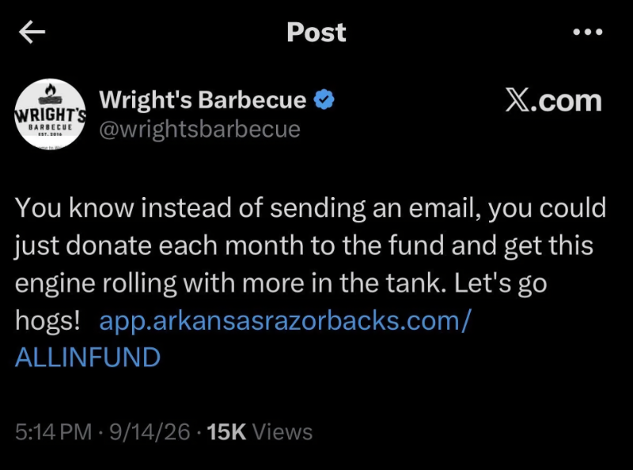

Arkansas lost 43-10 to Utah last Saturday. I have many thoughts on this year’s team and coaching situation. This is not the place for that. Arkansas athletics holds a special place in my heart and the heart of most Arkansans, partially because the Razorbacks are the only team in Arkansas competing at the highest level (and there's no professional sports).
Despite an extended downturn in football, I and many other Arkansans still care about and support the team. This passion has recently taken the form of criticism of the Head Coach and Athletic Director, who make 100x and 25x the median household income in Arkansas respectively. Whether the criticism is warranted or not, taking the criticism in stride is part of the job.

That’s why it’s so disappointing to me to see Wright’s Barbecue, a locally famous and successful (and expensive) barbecue spot, write on Twitter that fans should stop complaining and start donating to the program. This echoes similar comments from our athletic director Hunter Yurachek pitching an “easy” solution for our troubles: “If we can get 10,000 households across the state of Arkansas to give $100 a month all year long, we would be in the NIL game from a football perspective. It’s that simple.”
In the grand scheme of things, I don’t necessarily have a problem with athletics spending at Arkansas or most schools, since they tend to be self-sustaining from ticket sales, TV revenue, donations from affluent fans in exchange for season tickets, and so on.
Even grand expenditures like John Tyson personally funding the salary of John Calipari and associated NIL fund don’t bother me that much, because (presumably) John Tyson is not deciding between other philanthropy and funding our basketball program. He’s got enough money to do both if he so chooses.1
I don’t think this necessarily applies to the households Yurachek is aiming to raise $100 a month from. Arkansas is one of the poorest states in the country,2 and it’s insulting to have a man making $1.5 million a year telling ordinary Arkansans that they aren’t doing enough to support their team because they aren’t tithing enough. It’s insulting to be told that you aren’t “truly a Razorback fan” if you aren’t exclusively “bringing that positive energy”. It’s insulting to have three Fortune 500 companies and the richest family in America within 20 miles of campus and be told that you aren’t doing enough to pitch in.3
Arkansas athletics is blessed to have loyal fans across the state who will watch every game of a 2-10 football season and still proudly call the hogs. It would do them well to remember that they need the support of the fans much more than the fans need them.